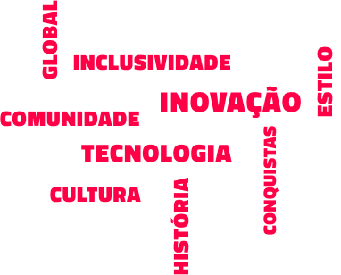

1.
Planejamento e Decisões Estratégicas
Gestão Executiva envia diretrizes e objetivos para o Gerenciamento de Equipes.
• P U C P R • P U C P R • P U C P R
A Team Liquid é uma organização profissional de esportes eletrônicos
com presença no mundo todo, sediada nos Países Baixos e fundada no
ano 2000. Originalmente como um site, a Team Liquid inicia suas
atividades ao contratar jogadores profissionais com o lançamento de
StarCraft II: Wings of Liberty.
Atualmente, com 3 instalações globais e mais de 250 colaboradores, a
Team Liquid tornou-se uma comunidade global multifacetada. Com um
alcance incomparável na indústria, a organização acumulou mais de 2
bilhões de visualizações em todas as suas plataformas e criou a
maior wiki de jogos, a Liquipedia.
Em 2023, foi inaugurada em São Paulo uma das maiores instalações de
treinamento para as equipes brasileiras da Team Liquid. A instalação
ira acomodar jogadores de várias categorias e fornecer a melhor
estrutura com uma equipe multidisciplinar que envolve psicologos,
terapeutas e nutricionistas para dar suporte aos treinamentos,
competições e criação de conteúdo. A organização investe em
desenvolvimento de talentos, sempre buscando jovens promissores para
integrar suas equipes, garantindo assim a renovação e a continuidade
de sucesso.
Mais do que uma equipe de esports bem-sucedida, a Team Liquid vem
liderando com longevidade tanto em competições globais quanto em
inovação. A organização está moldando a indústria de jogos.
Buscar a excelência e enfrentar desafios. Construir uma comunidade que valoriza a criatividade, a maestria e a gentileza.
Integridade, Humildade, Busca por Excelência, Curiosidade, Autenticidade & Inclusividade.
Um mundo mais gentil e respeitosocom todos. Queremos provar que esse mundo é possível através da nossa comunidade.
A Team Liquid está presente nas três maiores ligas e cenários de esports e tem os 15 melhores times em diferentes categorias de jogos. Possuimos um extenso currículo de conquistas e desempenho em competições contando com parcerias estratégicas e colaboração com grandes marcas como Alienware, Monster Energy e Honda, o que não só gera receitas significativas, mas também visibilidade e influência. Além disso temos um grande portifólio de negócios em propriedades virtuais, produção de vídeos, gestão de influenciadores e campanhas. A loja exclusiva da team liquid é dedicada à imensa comunidade de fãs, que conta com coleções exclusivas de eventos e colaborações com grandes marcas, como a famosa Disney.

Em um ambiente de competição entre jovens, a Team Liquid não se limita apenas à sua infraestrutura, mas também ao desenvolvimento e gestão de seus colaboradores, tornando a comunicação entre os colaboradores mais humanizada e aberta, o que resulta no desempenho satisfatório de todos. Há uma sensibilidade e preocupação social genuína na gestão da Team Liquid, onde a prioridade é manter um ecossistema saudável e positivo, de acordo com os valores da organização e levando também para o público. Com esta mensagem, a Team Liquid incentiva a diversidade e a integração social.

Gestão Executiva envia diretrizes e objetivos para o Gerenciamento de Equipes.
Managers transmitem objetivos e estratégias aos jogadores e staff técnico.
Staff técnico e jogadores trabalham juntos para se preparar para competições.
Equipe de marketing e comunicação trabalha na divulgação de notícias, eventos, resultados.
Feedback e interação com fãs e comunidade através de mídias sociais, eventos e outras plataformas.
Feedback das equipes, relatórios de desempenho e análises são enviados de volta à gestão executiva. Parceiros e Patrocinadores também são informados sobre campanhas e resultados.

“O Brasil é uma prioridade nos planos da Liquid, e a nova instalação é mais um símbolo dos nossos investimentos nos talentos e fãs locais”
Ler mais
A trajetória da Team Liquid vai se tornar o primeiro documentário sobre esports. Jogando por Todos: Uma história Team Liquid.
Ler mais Youtube
Youtube
 Twitch
Twitch
 Discord
Discord
 Twitter
Twitter